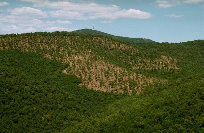

|
SylvoPast
Sylvopastoral management and fire prevention in Mediterranean forestsMichel Etienne (Inra), Christophe Le Page (Cirad)  SylvoPast is a model that simulates contrasting negotiation strategies for setting up a sylvopastoral management plan to prevent large forest fires in Mediterranean forests. It is built up around a virtual forest landscape and the management rules governing two agents (a sheep farmer and a forester) who are confronted by the same problem but have different goals (sheep production, biodiversity, and landscape protection).The natural resources are defined by combining layers of vegetation (tree, shrub or grass) randomly. They are subject to the rules of biological dynamics according to management, natural succession patterns, and forest fire. Grazing management strategies are based on forage availability which depends on climate and the vegetations structure and pattern. Forest management strategies are based on fire prevention (prevailing wind direction, the combustibility of plant structures), the value of forest timber, and landscape diversity. The number of operations carried out by each agent depends on cash availability. The main aim of the modelling approach is to identify which structure and pattern of vegetation is most effective in terms of the main management objectives and to compare several negotiation strategies between the two agents. The simplified fire propagation model provided in the MAS can also be used to test the efficiency of the sylvopastoral management plan in terms of the frequency of fire or the projects progress. The model may also be applied to identify potential equilibrium states and to compare the ways foresters and shepherds share information. The MAS has the advantage of being linked to a role play in which the players behaviour is observed and analysed so that new options for negotiation strategies between the agents can be coded. For more information, contact the author. |